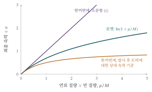

STEP III 2017, 문제 11
계속 읽기 전에 문제를 먼저 읽어 보자. 문제는 STEP Support Programme의 문제 데이터베이스에 있다: step.maths.org/questions/17-s3-q11
도입
우주 공간의 로켓에게는 밀어낼 대상이 없다. 로켓은 질량을 뒤로 던져서 앞으로 나아가고, 나머지는 운동량 보존(conservation of momentum)이 해결해 준다. 뒤쪽으로 대포를 쏘는 트럭은 조각으로 나뉜 로켓이다. 발사체 하나하나가 배기가스 한 덩어리인 셈이다.
그렇다면 대포는 한꺼번에 쏘아야 할까, 하나씩 차례로 쏘아야 할까? 이 문제는 분명한 답을 내놓지만, 무엇을 비교하는지 주의 깊게 살펴보아야 한다. 한꺼번에 쏘면 트럭이 더 빨라지지만 에너지도 더 많이 쓰므로, 두 경우에 대포가 하는 일은 같지 않다. 무엇을 고정하느냐를 바꾸면 답이 뒤집힌다. 이 점을 정리하다 보면 우주 비행에서 가장 중요한 방정식인 치올콥스키(Tsiolkovsky)의 로켓 방정식(rocket equation)에 이르고, 실제 로켓이 여러 단(stage)으로 이루어진 이유도 알게 된다.
시작하기 전에
대포가 발사되기 전에 트럭은 \(V\)로 움직인다. 발사 후 발사체의 속도는 \(V - v\)이다(즉 뒤쪽으로 속력 \(v - V\)). 발사 전 트럭에 대한 발사체의 상대 속도는 얼마인가?
그것은 \((V - v) - V = -v\)이다. 따라서 각 대포는 발사 직전 트럭의 속도를 기준으로 발사체를 뒤쪽으로 속력 \(v\)로 던진다. 이것이 이 문제의 고정된 규칙이다. 답을 결정하는 것이 바로 이 규칙이므로 꼭 기억해 두자.
차근차근 풀기
단계 1 한꺼번에 발사
계는 정지 상태에서 시작하므로 운동량은 \(0\)이다. 발사 후 트럭(질량 \(M\))은 앞으로 \(u\)로 움직이고, \(n\)개의 발사체는 뒤쪽으로 속력 \(v\)로 움직인다(발사 전 \(V = 0\)이므로). 따라서 \[Mu - nmv = 0, \qquad u = \frac{nmv}{M}.\] 증가한 운동 에너지(kinetic energy)는 \[K = \tfrac12Mu^2 + \tfrac12nmv^2 = \tfrac12\frac{n^2m^2v^2}{M} + \tfrac12nmv^2 = \tfrac12nmv^2\Bigl(1 + \frac{nm}{M}\Bigr). \qed\]
단계 2 하나씩 발사
\(r\)번째 대포가 발사되기 직전에, 남은 발사체를 실은 트럭의 질량은 얼마이고 속력은 얼마인가? \(r\)번째 발사에 대한 운동량 보존 식을 써 보아라.
\(r\)번째 발사 전에 트럭은 발사체 \(n - r + 1\)개를 싣고 있으므로 질량은 \(M + (n - r + 1)m\)이고 속력은 \(u_{r-1}\)이다. 발사 후 발사체 \(n - r\)개를 실은 트럭의 속력은 \(u_r\)이고, 발사된 발사체의 속도는 \(u_{r-1} - v\)이다. 운동량이 보존되므로 \[\bigl(M + (n - r + 1)m\bigr)u_{r-1} = \bigl(M + (n - r)m\bigr)u_r + m(u_{r-1} - v).\] \(mu_{r-1}\) 항을 정리하면 \(\bigl(M + (n - r)m\bigr)(u_r - u_{r-1}) = mv\)를 얻고, 이것이 \((*)\)이다.■
증가량을 모두 더하면 \[u_n = \sum_{r=1}^{n}\frac{mv}{M + (n - r)m} = \frac{mv}{M} + \frac{mv}{M + m} + \cdots + \frac{mv}{M + (n - 1)m}.\] 첫째 항 이후의 모든 항은 \(\frac{mv}{M}\)보다 작고 \(n > 1\)이므로 \(u_n < \frac{nmv}{M} = u\)이다.■
여기서는 왜 하나씩 쏘는 쪽이 불리할까? 첫 번째 대포가 발사될 때는 트럭과 아직 발사되지 않은 발사체 \(n - 1\)개를 함께 가속해야 하므로, 빈 트럭만 가속할 때보다 속력 증가가 작다.
단계 3 에너지 비용
\(r\)번째 발사에서 운동 에너지의 변화량을 써 보아라. \(u_r^2 - u_{r-1}^2\)이 들어 있는 항을 간단히 하는 데 \((*)\)를 어떻게 이용할 수 있는가?
운동 에너지의 변화량은 \[K_r - K_{r-1} = \tfrac12\bigl(M + (n - r)m\bigr)u_r^2 + \tfrac12m(u_{r-1} - v)^2 - \tfrac12\bigl(M + (n - r + 1)m\bigr)u_{r-1}^2.\] 마지막 두 항을 합치면 \(\frac12m(v^2 - 2vu_{r-1}) - \frac12\bigl(M + (n - r)m\bigr)u_{r-1}^2\)이 된다. 이제 제곱의 차(difference of squares)를 인수분해하고 \((*)\)를 이용하면 \[\tfrac12\bigl(M + (n - r)m\bigr)(u_r^2 - u_{r-1}^2) = \tfrac12mv(u_r + u_{r-1}).\] 따라서 \[K_r - K_{r-1} = \tfrac12mv(u_r + u_{r-1}) + \tfrac12mv^2 - mvu_{r-1} = \tfrac12mv^2 + \tfrac12mv(u_r - u_{r-1}). \qed\] \(r = 1\)부터 \(n\)까지 더하면 증가량 \(u_r - u_{r-1}\)이 연쇄적으로 소거되어(telescoping) \(u_n\)만 남는다. \[K_n = \tfrac12nmv^2 + \tfrac12mvu_n. \qed\] 끝으로 \(K = \frac12nmv^2 + \frac12nmv^2\cdot\frac{nm}{M} = \frac12nmv^2 + \frac12mvu\)이고 \(u_n < u\)이므로 \(K_n < K\)이다.■
돌아보기
단계마다 운동량 보존. 각 발사는 짐을 실은 트럭과 발사체 하나로 이루어진 작은 이체 문제였다.
망원 합. 증가량 \((*)\)와 에너지 증가량이 깔끔하게 더해졌다.
결론을 주의 깊게 읽기. 한꺼번에 쏘면 속력은 더 얻지만 에너지가 더 든다. 이 문제는 하는 일의 양이 서로 다른 두 과정을 비교하고 있다.
숨은 수학
무엇을 고정해야 할까?
실제 대포나 로켓 엔진은 발사체가 떠난 직후에 잰, 자기 자신에 대한 일정한 상대 속력으로 발사체를 던진다. 이 문제에서는 기준이 발사 전 트럭의 속력이다. 발사체가 작으면 그 차이는 아주 작지만, 발사체 \(n\)개를 한꺼번에 쏠 때는 차이가 매우 크다. 소문항 (i)에서는 무거운 발사체 더미가 마치 트럭에 반동(recoil)이 전혀 없는 것처럼 속력 \(v\)로 뒤로 던져지는데, 여기에는 많은 에너지가 필요하다.
대신 모든 발사체가 발사 후 트럭에 대해 속력 \(v\)로 떠난다고 하면 결론이 뒤집힌다. 한꺼번에 쏘면 \(u = \frac{nmv}{M + nm}\)이고, 하나씩 쏘면 \(u_n = \sum_{k=1}^{n}\frac{mv}{M + km}\)인데, 각 항이 적어도 \(\frac{mv}{M + nm}\)이므로 이쪽이 더 크다. 이제는 하나씩 쏘는 쪽이 유리하다. 각 발사체는 이미 움직이고 있는 트럭을 밀어내고, 뒤에 발사되는 대포일수록 가속해야 할 질량이 적기 때문이다. (연습문제에서 확인해 보아라.)
로켓 방정식
이제 발사체들의 총질량 \(\mu = nm\)을 고정한 채 발사체를 아주 작고 아주 많게 하자. 이것은 연료를 연속적으로 태우는 로켓이다. \(u_n\)의 합은 적분(integral)이 된다(두 규약 모두 같은 극한(limit)을 준다). \[u_n = \sum_{k=0}^{n-1}\frac{mv}{M + km} \;\to\; \int_0^{\mu}\frac{v\,\mathrm{d}s}{M + s} = v\ln\frac{M + \mu}{M}.\] 이것이 치올콥스키의 로켓 방정식이다. 배기가스가 로켓에 대해 속력 \(v\)로 분출되는 로켓이 얻는 속력은 \[\Delta u = v\ln\frac{m_{\text{처음}}}{m_{\text{나중}}}.\] 그림 10.3.1은 세 가지 답을 비교한다. 문제는 로그(logarithm)이다. 배기 속도(exhaust speed)가 약 \(4.5\) km/s(좋은 화학 연료)일 때 약 \(7.8\) km/s의 궤도 속도(orbital speed)에 도달하려면 질량비(mass ratio)가 \(e^{7.8/4.5} \approx 5.7\)이어야 하고, 공기 저항과 중력까지 고려하면 \(10\) 이상에 가까워진다. 로켓의 거의 전부가 연료인 것이다.

로켓에 단이 있는 이유
로그는 단 분리(staging)도 설명해 준다. 올라가는 도중에 빈 연료 탱크를 떨어뜨리는 로켓은 더 이상 그 쓸모없는 질량을 가속할 필요가 없다. 연속된 단들이 얻는 속력은 (대포처럼) 더해지는 반면 각 단이 얻는 속력은 그 단의 질량의 비에 따라 정해지므로, 로켓을 여러 단으로 나누면 같은 총질량의 단일 단 로켓으로는 낼 수 없는 속력에 도달할 수 있다. 우주 비행사들을 달에 데려간 새턴 V(Saturn V)는 3단 로켓이었고, 그 1단은 3분이 채 안 되는 동안 약 \(2000\)톤의 연료를 태웠다.
러시아의 지방 도시 칼루가(Kaluga)에서 학교 교사로 일하던 청각 장애인 콘스탄틴 치올콥스키(Konstantin Tsiolkovsky)는 1903년 “반작용 장치를 이용한 우주 공간 탐사(Exploration of outer space by means of reaction devices)”라는 제목의 논문에서 로켓 방정식을 발표했다. 그는 다단 로켓, 액체 수소와 산소 연료, 우주 정거장을 그 어느 것도 실제로 만들 수 있게 되기 수십 년 전에 구상했다. 이 방정식은 그보다 앞서 덜 알려진 곳에 등장한 적이 있지만(William Moore가 1810년에 한 형태를 유도했다), 그것이 우주 비행에 어떤 의미를 갖는지 처음 알아본 사람은 치올콥스키였다. 그는 이렇게 썼다. “지구는 인류의 요람이다. 그러나 사람이 언제까지나 요람 속에서 살 수는 없다.”
사고 기술
연속적인 과정은 흔히 수많은 작은 이산 단계의 극한으로 이해할 수 있다. 이산 문제를 정확히 푼 다음 단계의 크기를 줄여 나가면, 합이 적분이 된다.
여기서는 대포 \(n\)문이 로켓이 되었고, 합이 로그가 되었다. 대학에서는 물리 법칙을 유도할 때마다 같은 방법을 보게 된다. 작은 요소 하나를 분석하고, 그 결과를 모아 적분이나 미분방정식(differential equation)으로 만드는 것이다.
더 도전하기
다른 규약. 각 발사체가 발사 후 트럭에 대해 속력 \(v\)로 떠난다고 가정하고 소문항 (i)과 (ii)를 다시 풀어 보아라. 이번에는 하나씩 쏘는 쪽이 더 큰 최종 속력을 준다는 것을 보여라.
먼지 구름 속의 혜성. STEP III 2009, 문제 11에 도전해 보아라. 로켓과 같은 가변 질량(variable-mass) 문제이지만, 혜성은 질량을 잃는 대신 얻는다. 혜성의 속력이 어떤 값으로 다가가는지 눈여겨보아라.
2단 로켓. 배기 속도가 \(v\)이고 빈 질량이 \(M\), 연료 질량이 \(9M\)인 로켓이 있다. 이 로켓의 최종 속력을 구하여라. 이제 이 로켓을 빈 질량이 각각 \(\frac12M\)이고 연료가 각각 \(4.5M\)인 두 단으로 나누고, 1단은 연료가 바닥나면 떨어뜨린다고 하자. 두 최종 속력을 비교하여라.
부등식. 구간 \([0, x]\)에서 \(\frac{1}{1 + s}\)를 \(1\) 및 \(\frac{1}{1 + x}\)와 비교하여, \(x \geq 0\)일 때 \(\frac{x}{1 + x} \leq \ln(1 + x) \leq x\)임을 증명하여라.
더 읽을거리
Daniel Kleppner & Robert Kolenkow, An Introduction to Mechanics (Cambridge University Press), 4장. 운동량, 가변 질량, 로켓 방정식을 다룬다.
George Sutton & Oscar Biblarz, Rocket Propulsion Elements (Wiley). 표준적인 공학 교재로, 이 절을 공부한 뒤라면 앞부분의 장들을 읽을 수 있다.
Hermann Oberth, Ways to Spaceflight (NASA 번역본, 온라인에서 무료). 선구자가 직접 쓴 기록이다.